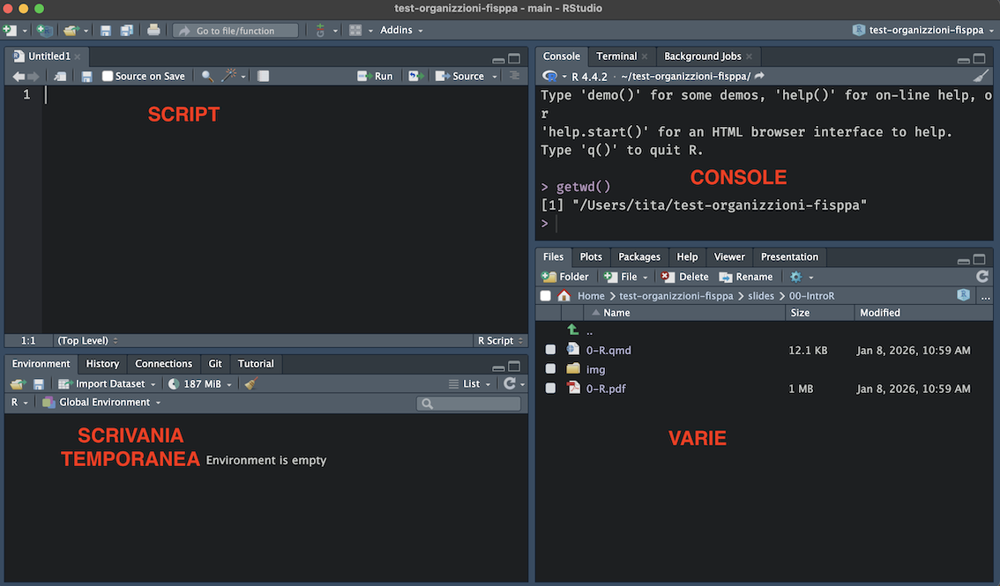
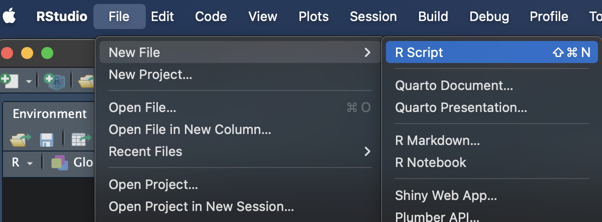
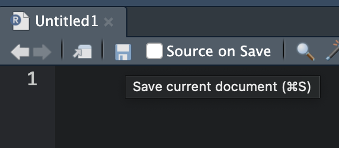
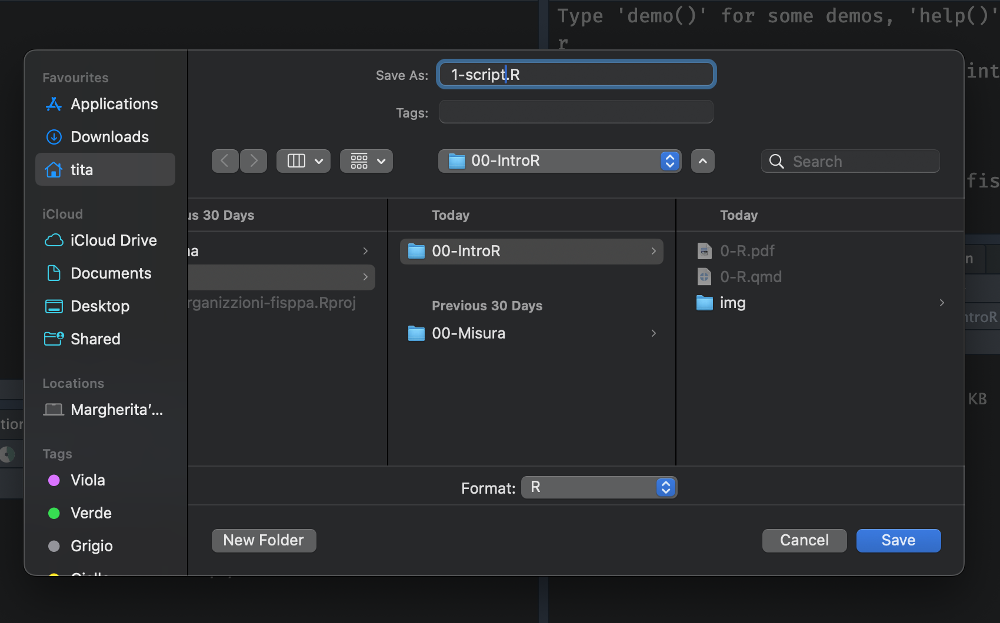
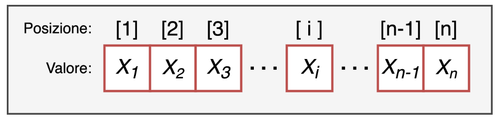

# getwd() = "get working directory"
# restituisce il percorso della cartella in cui R sta lavorando
getwd()[1] "/Users/tita/test-organizzioni-fisppa/slides/01-IntroR"RStudio è diviso in 4 pannelli principali:

1. Script. Il file di testo dove scrivi e salvi il codice. Puoi eseguire una riga alla volta (Ctrl + Invio / Cmd + Enter) oppure tutto lo script cliccando Source. I commenti si aggiungono con #.
2. Console. Qui R esegue il codice e mostra i risultati. Puoi scrivere comandi direttamente nella console per prove rapide, ma non vengono salvati. Contiene anche le tab Terminal e Background Jobs.
3. Environment / Scrivania temporanea. Mostra tutti gli oggetti creati durante la sessione corrente. Contiene anche le tab History, Connections, Git e Tutorial.
4. Varie. Pannello multifunzione con diverse tab:
?nomefunzione)I comandi nella console vengono eseguiti ma non salvati.
Per eseguire il comando → Invio
L'output è immediato e appare nella console.
È possibile salvare gli script con tutti i comandi.
Per eseguire il comando → Ctrl + Invio (Cmd + Enter su Mac)
L'output è restituito nella console.
La working directory è la cartella in cui R cerca i file da caricare e salva gli output. Per sapere dove si trova, si usa getwd():
# getwd() = "get working directory"
# restituisce il percorso della cartella in cui R sta lavorando
getwd()[1] "/Users/tita/test-organizzioni-fisppa/slides/01-IntroR"Per cambiare working directory si usa setwd():
# setwd() = "set working directory"
# incolla qui il percorso della tua cartella di lavoro
setwd("/Utente/NomeUtente/Desktop/NomeCartella") # Mac
setwd("C:/Utente/NomeUtente/OneDrive/Desktop/NomeCartella") # Windows con OneDrive
setwd("C:/Utente/NomeUtente/Desktop/NomeCartella") # WindowsIn RStudio puoi anche usare Session → Set Working Directory → Choose Directory per impostare la cartella senza scrivere il percorso a mano.
Vi consiglio di creare una cartella sul vostro Desktop dove salverete tutto il materiale del corso.



Salviamo lo script dentro la cartella d’interesse!
Prima di iniziare a lavorare, è buona abitudine pulire l'ambiente di R, cioè rimuovere tutti gli oggetti creati in sessioni precedenti:
rm(list = ls()) # rm = "remove", ls() = lista di tutti gli oggetti in memoria
# insieme: elimina tutti gli oggetti dall'ambiente correnteQuesto comando elimina tutti gli oggetti presenti nell'ambiente. Assicurati di aver salvato tutto ciò che ti serve prima di eseguirlo.
R di base è già molto potente, ma la sua vera forza sta nei pacchetti: collezioni di funzioni aggiuntive sviluppate dalla comunità.
Per usare un pacchetto bisogna fare due cose:
install.packages("readr") # scarica e installa il pacchetto
install.packages("writexl") # basta farlo una volta, poi rimane installatolibrary(readr) # rende disponibili le funzioni del pacchetto
library(writexl)Gli oggetti si creano con l'operatore = oppure <-, seguendo la sintassi nomeOggetto <- contenuto:
nome1 = "contenuto" # con =
nome2 <- "contenuto" # con <- (stessa cosa)I tipi principali di oggetti in R sono:
ch = "carattere" # character: testo, sempre tra virgolette
num = 4 # numeric: numero intero
dec = 1.5 # numeric: numero decimale (usa il punto, non la virgola!)
logi = FALSE # logical: solo TRUE o FALSE (ricorda: FALSE = 0, TRUE = 1)Per controllare il tipo di un oggetto si usa class():
class(ch) # "character"[1] "character"class(num) # "numeric"[1] "numeric"class(logi) # "logical"[1] "logical"I vettori si creano con la funzione c(). Sono strutture monodimensionali, caratterizzate solo dalla loro lunghezza, ottenibile con length().

vet = c(2, 3, 4, 5) # creo un vettore di 4 numeri
length(vet) # restituisce 4[1] 4Un vettore deve contenere elementi dello stesso tipo. Se si mescolano tipi diversi, R converte tutto in character (coercizione):
vet_ok = c(2, 3, 4, NA, 5) # NA è un valore mancante, non una stringa: rimane numeric
class(vet_ok)[1] "numeric"vet_wrong = c(2, 3, 4, "NA", 5) # "NA" è una stringa: R converte tutto il vettore in character
class(vet_wrong)[1] "character"Per estrarre elementi da un vettore si usano le parentesi quadre []:
vet # vettore completo: 2 3 4 5[1] 2 3 4 5vet[1] # primo elemento: 2[1] 2vet[c(1, 4)] # primo e quarto elemento: 2 5[1] 2 5È anche possibile usare l'indicizzazione logica per estrarre solo gli elementi che soddisfano una condizione:
vet > 2 & vet < 7 # restituisce TRUE/FALSE per ogni elemento[1] FALSE TRUE TRUE TRUEvet[vet > 2 & vet < 7] # estraggo solo gli elementi per cui la condizione è TRUE[1] 3 4 5# alternativa: salvo prima le posizioni di interesse...
posizioni = vet > 2 & vet < 7
vet[posizioni] # ...e le uso per estrarre[1] 3 4 5I fattori sono vettori che sembrano di tipo character, ma sono caratterizzati anche da livelli (categorie). Si creano con factor():
fact1 = factor(
x = c("basso", "medio", "alto", "basso", "medio", "alto"),
levels = c("basso", "medio", "alto") # definisce l'ordine dei livelli
# labels = c("B", "M", "A") # opzionale: rinomina le etichette
)È importante specificare levels quando l'ordine dei livelli è rilevante (es. variabili ordinali).
Se invece non si specifica l’argomento levels o si crea un vettore di tipo character, e poi lo si trasforma a fattore attraverso la funzione as.factor(), R assegna i livelli in ordine alfabetico:
# vettore di tipo `character`
vettore_ch = c("basso", "medio", "alto", "basso", "medio", "alto")
# lo trasformo a fattore
fact2 = as.factor(vettore_ch) # livelli: alto, basso, medio (ordine alfabetico)
fact1 # livelli: basso, medio, alto (ordine specificato)[1] basso medio alto basso medio alto
Levels: basso medio altofact2 # livelli: alto, basso, medio (ordine alfabetico)[1] basso medio alto basso medio alto
Levels: alto basso medioI livelli rimangono come metadati anche quando non ci sono più osservazioni per quel livello:
fact1[1] basso medio alto basso medio alto
Levels: basso medio alto# rimuovo tutte le osservazioni con livello "basso"
fact3 = fact1[fact1 != "basso"]
fact3 # il livello "basso" è ancora presente tra i metadati![1] medio alto medio alto
Levels: basso medio altoPer rimuovere i livelli senza osservazioni si usa droplevels():
fact3 = droplevels(fact3) # elimina i livelli non più utilizzati
fact3 # ora i livelli sono solo: medio, alto[1] medio alto medio alto
Levels: medio altoLa funzione rep() permette di ripetere stringhe o numeri senza scriverli uno ad uno:
# manualmente (noioso e soggetto a errori):
c("basso", "medio", "alto", "basso", "medio", "alto", "basso", "medio", "alto")[1] "basso" "medio" "alto" "basso" "medio" "alto" "basso" "medio" "alto" # con rep(): molto più comodo
rep(c("basso", "medio", "alto"), times = 3) # ripete il vettore 3 volte[1] "basso" "medio" "alto" "basso" "medio" "alto" "basso" "medio" "alto" Le matrici sono strutture bidimensionali — hanno righe e colonne — e si creano con matrix(). La funzione dim() restituisce entrambe le dimensioni (righe, colonne):
# data: valori da inserire (riempie per colonna per default)
# nrow: numero di righe, ncol: numero di colonne
my_mat = matrix(data = 1:10, nrow = 2, ncol = 5)
my_mat [,1] [,2] [,3] [,4] [,5]
[1,] 1 3 5 7 9
[2,] 2 4 6 8 10dim(my_mat) # restituisce c(2, 5): 2 righe, 5 colonne[1] 2 5Come i vettori, le matrici possono contenere una sola tipologia di dati.
Per selezionare elementi di una matrice si usano due indici separati da virgola: matrice[riga, colonna].
my_mat[1, 1] # elemento in riga 1, colonna 1[1] 1my_mat[1, ] # intera prima riga (colonna lasciata vuota = tutte le colonne)[1] 1 3 5 7 9my_mat[, 1] # intera prima colonna (riga lasciata vuota = tutte le righe)[1] 1 2I vettori si possono concatenare tra loro con c():
my_vect1 = c(1:4) # vettore 1: 1 2 3 4
my_vect2 = c(5:10) # vettore 2: 5 6 7 8 9 10
my_vect12 = c(my_vect1, my_vect2) # risultato: 1 2 3 4 5 6 7 8 9 10
my_vect12 [1] 1 2 3 4 5 6 7 8 9 10Le matrici si uniscono con cbind() (per colonna) o rbind() (per riga):
my_mat1 = matrix(data = 1:4, nrow = 2, ncol = 2)
my_mat2 = matrix(data = 5:8, nrow = 2, ncol = 2)
cbind(my_mat1, my_mat2) # affianca le due matrici → risultato: 2 righe, 4 colonne [,1] [,2] [,3] [,4]
[1,] 1 3 5 7
[2,] 2 4 6 8rbind(my_mat1, my_mat2) # impila le due matrici → risultato: 4 righe, 2 colonne [,1] [,2]
[1,] 1 3
[2,] 2 4
[3,] 5 7
[4,] 6 8Il dataframe è la struttura più usata in R per analizzare dati. Puoi pensarlo come un foglio Excel:
Si crea con data.frame():
my_df = data.frame(
numeri = 1:4, # colonna numerica
lettere = letters[1:4], # colonna character (letters = a, b, c, ...)
normale = rnorm(n = 4, mean = 0, sd = 1) # 4 valori casuali da distribuzione normale
)
my_df numeri lettere normale
1 1 a -0.56047565
2 2 b -0.23017749
3 3 c 1.55870831
4 4 d 0.07050839Per ottenere informazioni sulla struttura del dataframe:
names(my_df) # nomi delle colonne[1] "numeri" "lettere" "normale"dim(my_df) # dimensioni: c(righe, colonne)[1] 4 3nrow(my_df) # numero di righe[1] 4ncol(my_df) # numero di colonne[1] 3La funzione più utile è str(), che fornisce una panoramica rapida: dimensioni, tipi di variabili e primi valori:
str(my_df) # str = "structure": mostra tipo e contenuto di ogni colonna'data.frame': 4 obs. of 3 variables:
$ numeri : int 1 2 3 4
$ lettere: chr "a" "b" "c" "d"
$ normale: num -0.5605 -0.2302 1.5587 0.0705Come per le matrici, si usano le parentesi quadre []:
my_df[1] # prima colonna → restituisce un data.frame con una colonna numeri
1 1
2 2
3 3
4 4my_df[1, 1] # elemento in riga 1, colonna 1 → restituisce un singolo valore[1] 1$L'operatore $ è il modo più diretto per accedere a una colonna per nome:
my_df$numeri # estraggo l'intera colonna "numeri" come vettore[1] 1 2 3 4my_df$numeri[1] # primo elemento della colonna "numeri"[1] 1Molto spesso si ha bisogno di selezionare solo alcune righe del dataset in base a una condizione:
# righe in cui "numeri" è maggiore di 2
my_df[my_df$numeri > 2, ] numeri lettere normale
3 3 c 1.55870831
4 4 d 0.07050839# righe in cui "numeri" è compreso tra 2 e 4 (esclusi)
my_df[my_df$numeri > 2 & my_df$numeri < 4, ] numeri lettere normale
3 3 c 1.558708# righe in cui "numeri" == 2, ma solo la seconda colonna (per indice)
my_df[my_df$numeri == 2, 2][1] "b"# righe in cui "numeri" == 2, ma solo la colonna "lettere" (per nome)
my_df[my_df$numeri == 2, "lettere"][1] "b"subset()La funzione subset() è un'alternativa più leggibile per filtrare righe e selezionare colonne:
# ricreo il dataframe con più osservazioni per gli esempi
my_df = data.frame(
numeri = rep(1:3, each = 3), # 1 1 1 2 2 2 3 3 3
lettere = rep(letters[1:3], 3), # a b c a b c a b c
normale = rnorm(n = 9, mean = 0, sd = 1)
)
head(my_df, n = 5) # head() mostra le prime n righe del dataframe numeri lettere normale
1 1 a 0.1292877
2 1 b 1.7150650
3 1 c 0.4609162
4 2 a -1.2650612
5 2 b -0.6868529subset() con l'argomento subset= filtra le righe:
# seleziono le righe in cui lettere == "a" E numeri > 2
subset(my_df, subset = lettere == "a" & numeri > 2) numeri lettere normale
7 3 a 1.224082È equivalente a:
# stessa selezione con indicizzazione logica classica
my_df[my_df$lettere == "a" & my_df$numeri > 2, ] numeri lettere normale
7 3 a 1.224082Con l'argomento select= si scelgono le colonne da mantenere:
# seleziono solo le colonne "lettere" e "numeri"
subset(my_df, select = c(lettere, numeri)) lettere numeri
1 a 1
2 b 1
3 c 1
4 a 2
5 b 2
6 c 2
7 a 3
8 b 3
9 c 3I due argomenti si possono combinare:
# filtro le righe E seleziono le colonne contemporaneamente
subset(my_df,
subset = lettere == "a" & numeri > 2, # condizione sulle righe
select = c(lettere, numeri)) # colonne da tenere lettere numeri
7 a 3$L'operatore $ si usa anche per creare nuove colonne o modificare quelle esistenti:
# creo una nuova colonna come somma di "numeri" e "normale"
my_df$somma = my_df$numeri + my_df$normale
# modifico la colonna "numeri" aggiungendo 1 a ogni valore
my_df$numeri = my_df$numeri + 1
# creo una colonna che combina "numeri" e "lettere" in una stringa (es. "2_a")
my_df$both = paste(my_df$numeri, my_df$lettere, sep = "_") # ?paste per la documentazione
str(my_df)'data.frame': 9 obs. of 5 variables:
$ numeri : num 2 2 2 3 3 3 4 4 4
$ lettere: chr "a" "b" "c" "a" ...
$ normale: num 0.129 1.715 0.461 -1.265 -0.687 ...
$ somma : num 1.129 2.715 1.461 0.735 1.313 ...
$ both : chr "2_a" "2_b" "2_c" "3_a" ...Per unire due dataframe con le stesse colonne si usa rbind(). Le colonne devono avere gli stessi nomi e lo stesso numero:
my_df2 = data.frame(
numeri = 1:9,
lettere = letters[1:9],
normale = rnorm(9, mean = 0, sd = 1),
somma = my_df$somma,
both = paste(1:9, letters[1:9], sep = "_")
)
rbind(my_df, my_df2) numeri lettere normale somma both
1 2 a 0.1292877 1.1292877 2_a
2 2 b 1.7150650 2.7150650 2_b
3 2 c 0.4609162 1.4609162 2_c
4 3 a -1.2650612 0.7349388 3_a
5 3 b -0.6868529 1.3131471 3_b
6 3 c -0.4456620 1.5543380 3_c
7 4 a 1.2240818 4.2240818 4_a
8 4 b 0.3598138 3.3598138 4_b
9 4 c 0.4007715 3.4007715 4_c
10 1 a 0.1106827 1.1292877 1_a
11 2 b -0.5558411 2.7150650 2_b
12 3 c 1.7869131 1.4609162 3_c
13 4 d 0.4978505 0.7349388 4_d
14 5 e -1.9666172 1.3131471 5_e
15 6 f 0.7013559 1.5543380 6_f
16 7 g -0.4727914 4.2240818 7_g
17 8 h -1.0678237 3.3598138 8_h
18 9 i -0.2179749 3.4007715 9_imy_df3 = rbind(my_df, my_df2) # creo il dateset completo
str(my_df3) # ora ho tutte le osservazioni'data.frame': 18 obs. of 5 variables:
$ numeri : num 2 2 2 3 3 3 4 4 4 1 ...
$ lettere: chr "a" "b" "c" "a" ...
$ normale: num 0.129 1.715 0.461 -1.265 -0.687 ...
$ somma : num 1.129 2.715 1.461 0.735 1.313 ...
$ both : chr "2_a" "2_b" "2_c" "3_a" ...merge()Quando si vogliono combinare due dataframe tramite una variabile in comune (es. l'ID soggetto), si usa merge():
# dataframe con i tempi di reazione (800 osservazioni, 2 soggetti x 2 condizioni)
df_rt = data.frame(
subj = factor(rep(c("caio", "tizio"), each = 400)),
cond = factor(rep(c("easy", "hard"), each = 200, times = 2)),
rt = c(rlnorm(n = 400, meanlog = -1, sdlog = .25), # RT condizione easy
rlnorm(n = 400, meanlog = -.7, sdlog = .3)) # RT condizione hard
)
# dataframe con l'età dei soggetti (una riga per soggetto)
df_age = data.frame(
subj = factor(c("caio", "tizio")),
age = c(20, 30)
)
# merge() unisce i due dataframe usando "subj" come chiave comune
# ogni riga di df_rt viene arricchita con l'età del soggetto corrispondente
df_all = merge(x = df_rt, y = df_age, by = "subj")
str(df_all) # struttura del dataframe'data.frame': 800 obs. of 4 variables:
$ subj: Factor w/ 2 levels "caio","tizio": 1 1 1 1 1 1 1 1 1 1 ...
$ cond: Factor w/ 2 levels "easy","hard": 1 1 1 1 1 1 1 1 1 1 ...
$ rt : num 0.285 0.307 0.315 0.241 0.454 ...
$ age : num 20 20 20 20 20 20 20 20 20 20 ...head(df_all, n = 5) # prime n osservazioni subj cond rt age
1 caio easy 0.2846482 20
2 caio easy 0.3065965 20
3 caio easy 0.3146609 20
4 caio easy 0.2413099 20
5 caio easy 0.4535938 20tail(df_all, n = 5) # ultime n osservazioni subj cond rt age
796 tizio hard 0.7148923 30
797 tizio hard 0.3766440 30
798 tizio hard 0.3455794 30
799 tizio hard 0.3434561 30
800 tizio hard 0.6204496 30R supporta molti formati. I più comuni sono .csv, .xlsx e .rda.
| Formato | Funzione esportazione | Funzione importazione | Pacchetto | Quando usarlo |
|---|---|---|---|---|
.csv |
write_csv() |
read_csv() |
readr |
Condivisione con altri software (Excel, SPSS, …) |
.rda |
save() |
load() |
base R | Salvare oggetti R (anche più di uno) |
.xlsx |
write_xlsx() |
read_xlsx() |
writexl / readxl |
Condivisione con utenti Excel |
Esportazione:
library(readr) # contiene write_csv() e read_csv()
library(writexl) # contiene write_xlsx()
# salva df_rt come file CSV nella cartella "data/"
# row.names = FALSE (default in write_csv): non aggiunge una colonna con i numeri di riga
write_csv(df_rt, file = "data/df_rt.csv")
# salva df_rt in formato nativo R (.rda)
# vantaggio: mantiene tipi, fattori, attributi esattamente come sono in R
# svantaggio: leggibile solo da R
save(df_rt, file = "data/df_rt.rda")
# salva df_age come file Excel (.xlsx)
write_xlsx(df_age, path = "data/df_age.xlsx")Importazione:
# legge un CSV e lo salva come oggetto → occorre sempre assegnarlo a un nome!
df_rt_csv = read_csv("data/df_rt.csv")
# nota: read_csv() (readr) restituisce un tibble, read.csv() (base R) un data.frame classico
# load() non restituisce un valore: ripristina direttamente l'oggetto
# con il nome che aveva quando è stato salvato (in questo caso: df_rt)
load("data/df_rt.rda")
# legge un file Excel
library(readxl) # pacchetto separato da writexl: serve solo per leggere
df_age_xlsx = read_xlsx("data/df_age.xlsx")Con load() non puoi scegliere il nome dell'oggetto: viene ripristinato con il nome originale. Se nell'ambiente esiste già un oggetto con lo stesso nome, verrà sovrascritto senza avviso.